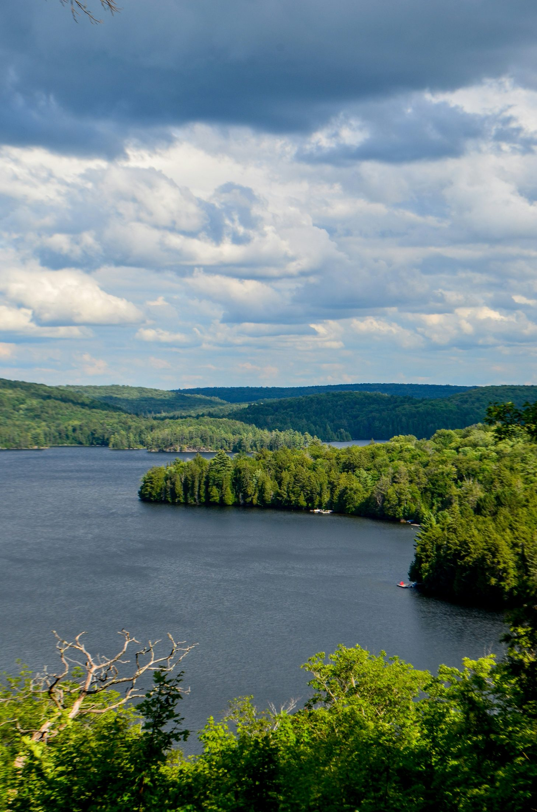
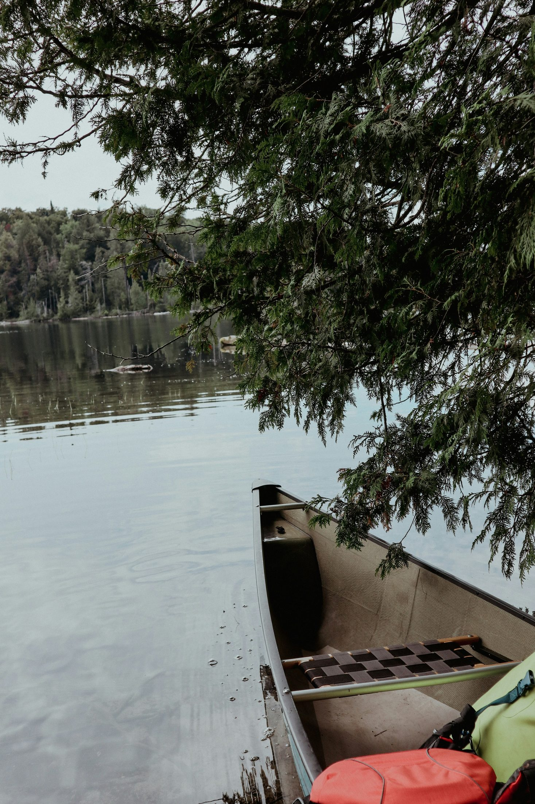
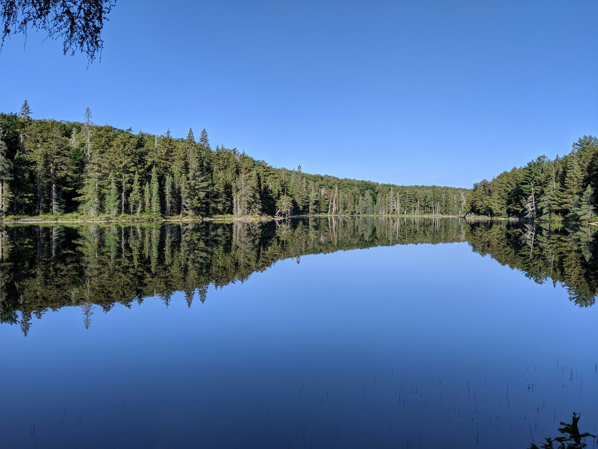
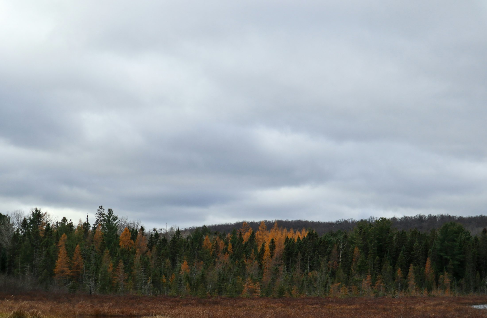
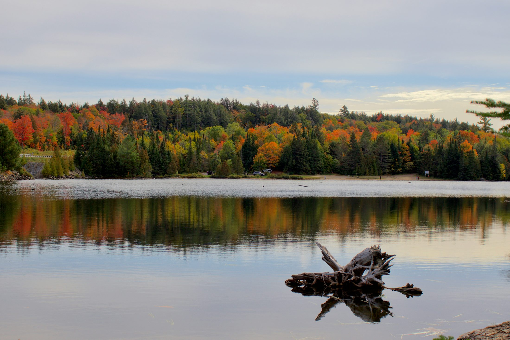

A classic Canadian wilderness trip: big lakes, pine forests, wildlife viewing, canoe routes, snowshoe trails, fall colours, and the feeling of finally being far away from city noise.
Algonquin is the most “Canada” feeling destination in this guide. It is bigger, quieter, wilder, and less polished than towns like Elora or PEC. The best version is not a long checklist — it is one trail, one lake, one lookout, and enough time to feel the scale of the place.
For Shreya’s first few years in Canada, Algonquin should probably be experienced twice: once in fall for colours and once in winter for snow, silence, and that deep Canadian forest feeling.
Easy, high-reward first stop with a panoramic view and exhibits. Great orientation point before doing anything deeper.
Short but rewarding trail with one of the classic Highway 60 views. Best in fall, beautiful any time.
Iconic canoe base and a gentle way to experience the park on water without committing to backcountry travel.
Good winter-friendly base area, especially for simple snowshoeing or walking depending on conditions.
A useful rainy-day or winter-friendly interpretive option near the East Gate.
The premium lodge-style version where food, fireplace, and wilderness are part of the same weekend.





For Algonquin, early departure is worth it because daylight matters.
Top up gas, coffee, snacks, and washroom before entering the park corridor.
Pick one trail and one viewpoint. Do not attempt to see the whole park in one day.
| Route Rule | Why it matters |
|---|---|
| One main region per trip | Keeps the day romantic instead of exhausting. |
| Book the anchor activity first | Parking, dinner, parks, tours, and ferries can sell out. |
| Keep a weather backup | Ontario weekends can change quickly. |
Practical, cheaper, and close enough to the West Gate for day trips.
Better for romance and quiet evenings, especially if it has fireplace or lake access.
Worth it if the lodge experience, food, and wilderness are the point of the weekend.
More rustic, but memorable if you want a true winter park experience and can plan properly.
Eat before entering the park or pack food. Do not assume convenient food inside the park.
Pack lunch, water, and hot drinks. This improves the whole day.
Huntsville, Dwight, or lodge dining are more realistic than trying to find food deep in the park.
Bring backup snacks/meals. Algonquin is not a food-focused trip.
Earlier is better, especially fall/winter.
Orient yourself and use facilities.
Lookout Trail or another short Highway 60 trail.
Do not rush to another major hike.
Logging Museum, lake viewpoint, or wildlife drive.
Cabin/lodge dinner and quiet evening.
Optional short trail before driving home.
| Spring | Mud and bugs can be an issue; check trail conditions. |
| Summer | Best for canoeing and lakes, but book ahead. |
| Fall | Peak colours are incredible but traffic and permits require planning. |
| Winter | Open year-round, but services are limited and trail/road conditions matter. |
Use this as the quick seasonal decision guide before choosing a date.
The best colour experience in Ontario if timed right.
Canoe routes, lakes, wildlife, and long days.
Snowshoeing and quiet wilderness.
Moose viewing potential, but bugs can be intense.
A quick scan to decide whether this is the right kind of trip for the two of you.
Use these as your shot list so you actually capture the moment when you are there.
Tip: Use wide lens/phone panorama.
Tip: Shoot early for calm water.
Tip: Build time for spontaneous stops.
The practical details that keep a beautiful day from becoming stressful.
Check parking/reservations before leaving.
Bring water, layers, and comfortable shoes.
Keep the plan slow so the trip feels memorable, not rushed.